CS180/280A · Project 4
Neural Radiance Fields (NeRF) represent a scene as a continuous function that maps 3D coordinates and viewing directions to color and density. In this project I built up that pipeline step by step: calibrating my phone camera with ArUco tags, estimating poses for a small object captured from many views, and then training neural networks that learn the underlying radiance field.
The coordinate-based MLP fits the provided fox.jpg and one of my own photos to around 36 dB PSNR after 1.5k Adam steps. The rest of this page walks through the main design choices and results for each part, ending with a multiview NeRF trained on both the Lego scene and my own capture.
I captured roughly three dozen handheld frames of the provided ArUco grid on an iPhone, moving around to vary tilt and distance so the poses span a useful range of viewpoints. A calibration script in main.py detects markers with cv2.aruco, builds 2D–3D correspondences for the four tag corners in each image, and calls cv2.calibrateCamera to recover the intrinsics and distortion parameters.
All of the usable frames produced valid detections, giving a focal length of roughly 3.5k pixels and a principal point near the image center. The mean reprojection error is about 1.3 px, computed by projecting the tag corners back into each image. These intrinsics and distortion coefficients are reused for the pose estimation and dataset construction steps later on.
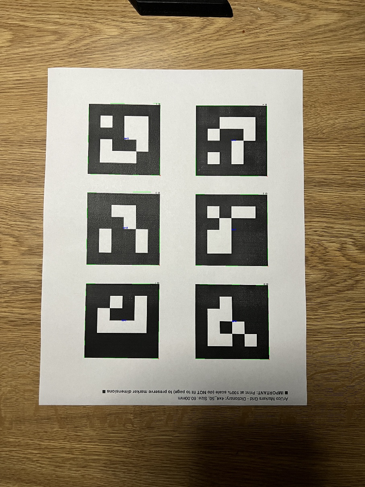
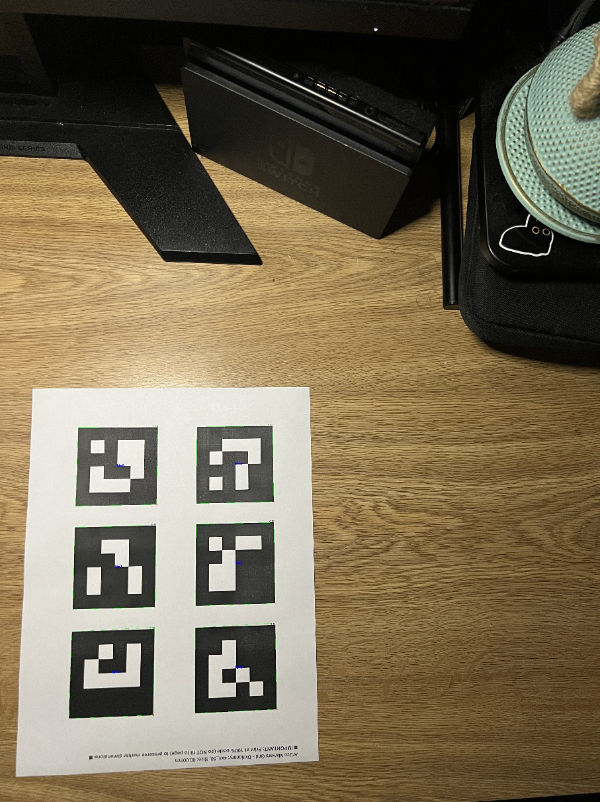
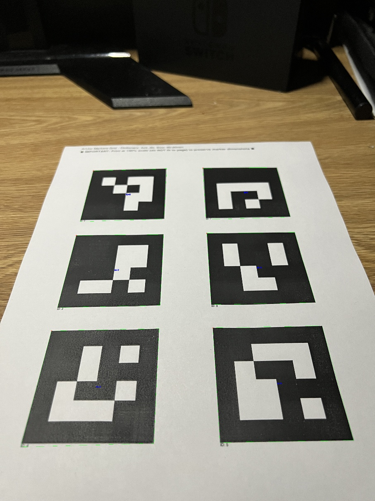
For Part 0.2 I shot 37 photos of a small desk object with a printed ArUco tag taped next to it. All images were taken with the same focal length as the calibration set, with exposure locked so appearance stays consistent. I walked a loose circle around the object and added some high and low angles to provide vertical parallax for the later NeRF training.
.npz file.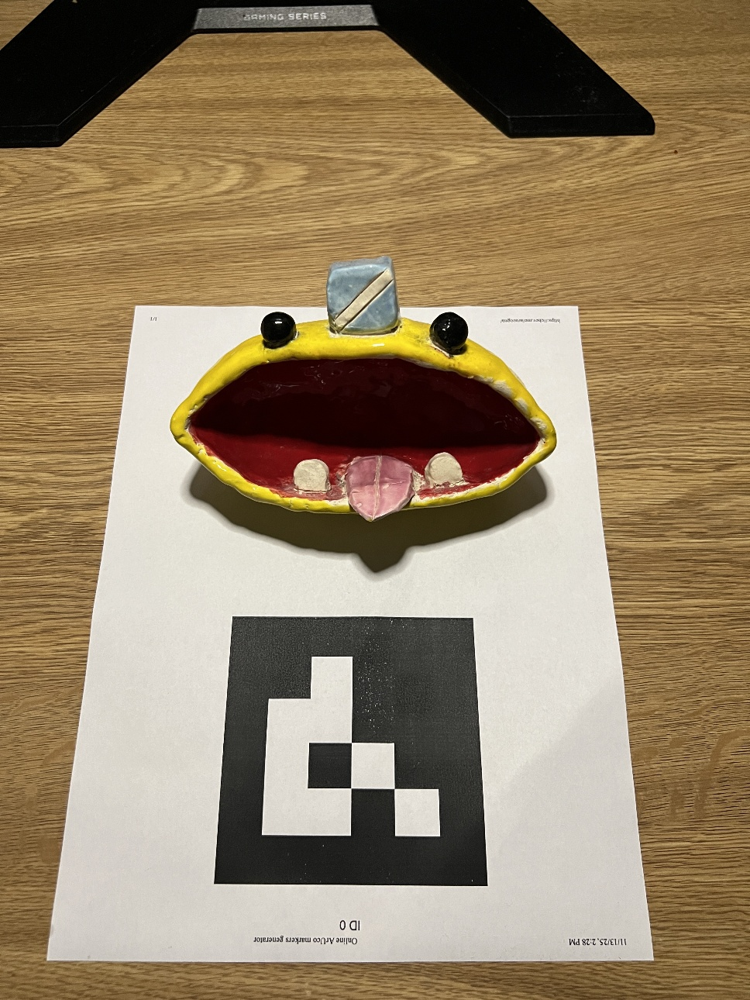
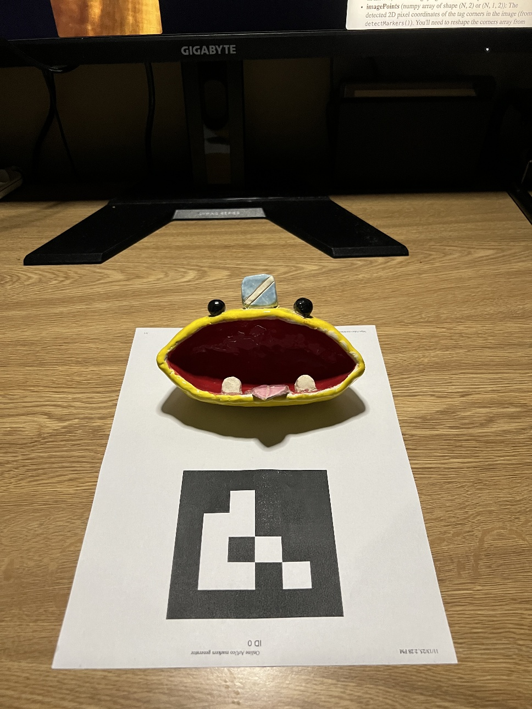
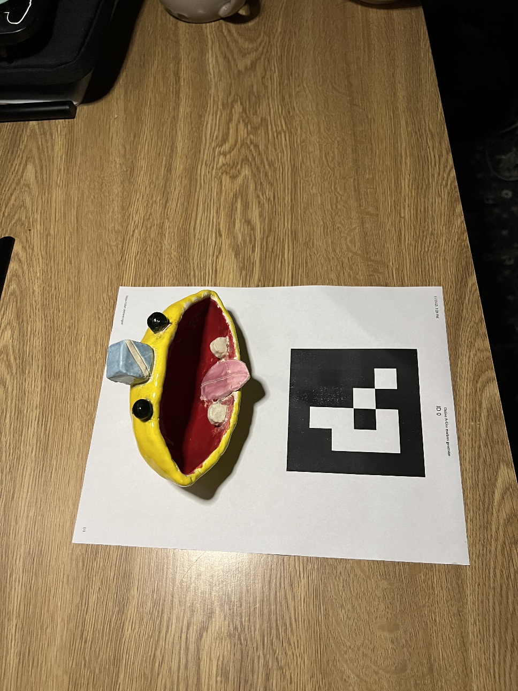
I extended the calibration script so it also supports a --task poses mode. This path loads the saved intrinsics (camera_calibration.npz), detects the single ArUco tag per frame using OpenCV’s ArucoDetector API, picks the largest detection if multiple candidates appear, and feeds the four tag corners into cv2.solvePnP. The returned world-to-camera matrix is inverted analytically (RT, –RTt) to match the NeRF convention of camera-to-world transforms.
Out of the 37 captures in obj_scan/, 35 leads to valid poses; the two failures correspond to frames where the tag was cut off at the image border. The successful poses, rotation and translation vectors, and image filenames are saved in data/object_poses.npz along with a JSON summary for quick inspection. Running the script with --visualize-poses spins up a viser viewer that plots camera frustums in 3D so I can inspect the recovered camera cloud before moving on.
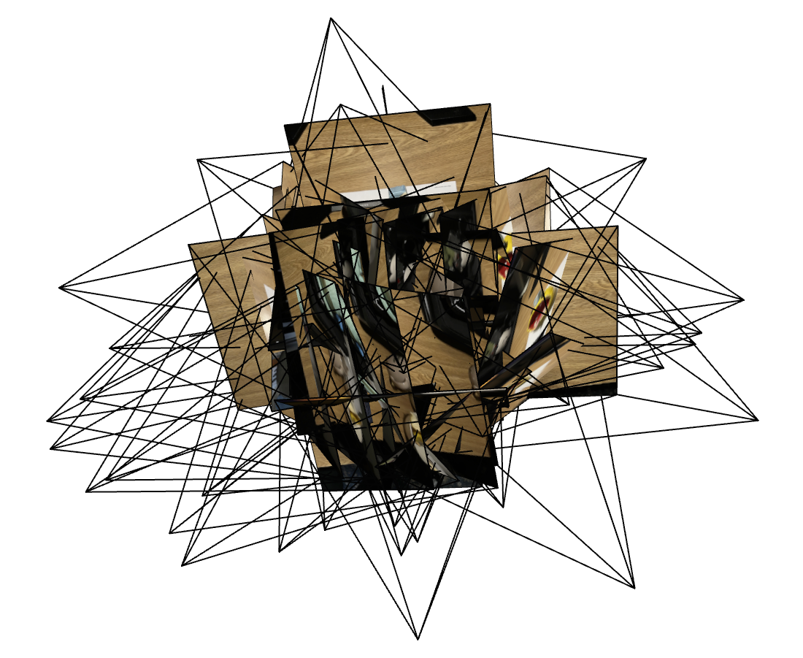
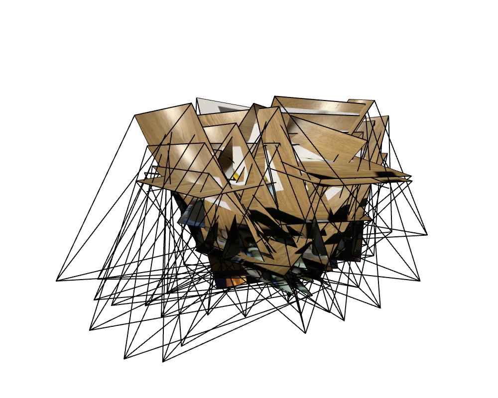
The --task dataset mode in main.py ties together the calibration and pose results. It loads camera_calibration.npz and object_poses.npz, undistorts each posed frame with cv2.undistort, and optionally crops away the black borders introduced by rectification. I call cv2.getOptimalNewCameraMatrix once, adjust the principal point by the ROI offset if cropping, and assert that all undistorted frames share the same resolution before batching them into a NumPy array.
Each surviving frame is paired with its c2w matrix. I optionally shuffle the set with a fixed seed, then split indices into train / val / test using the --val-count and --test-count flags. The final .npz stores images_train, images_val, images_test, c2ws_train, c2ws_val, and c2ws_test, together with the averaged focal length, the rectified camera matrix, and a JSON sidecar listing which filenames landed in each split. The format matches the staff Lego dataset, so the same NeRF training code can be reused later.
Fit a coordinate-based MLP to a single image using sinusoidal positional encoding.
I treat each pixel as a point in [0,1]^2, pass it through a sinusoidal positional encoder with L = 10 frequency bands (keeping the raw input plus sin/cos terms of 2kπu/v), and feed the resulting 42-D vector into a small MLP. The network uses four 256-wide ReLU blocks and a Sigmoid output so predictions stay in [0,1]. With this setup, the model has enough capacity to recover fine structure without needing skip connections in the 2D case.
Model summary - Positional encoding: [u, v, sin/cos(2^kπu), sin/cos(2^kπv)] for k ∈ [0, 9] - Encoded dimension: 42 (2 base + 4 × L) - Hidden trunk: 4 × (Linear 256 → ReLU) - Output head: Linear 256 → Sigmoid (RGB) - Parameters: ~270K, implemented in PyTorch
A lightweight dataloader flattens the image, normalizes pixel centers to [0,1], and samples 10k coordinates uniformly at each step (with replacement). Colors are scaled to [0,1] and supervised with MSE; the same mini-batches are used to compute the PSNR curve throughout training. Adam with learning rate 1e-2 converges quickly, so 1.5k steps are enough even for the more detailed settings.
Training hyperparameters - Optimizer: Adam (lr 1e-2, β=(0.9, 0.999)) - Batch size: 10,000 random pixels per iteration - Iterations: 1,500 - Images: resized fox reference photo + one custom capture - Metrics: mini-batch PSNR, plus full-resolution renders saved every 200 iters
The plots below show full-resolution renders sampled every few hundred iterations. For the fox image, the model first gets the global color layout, then gradually sharpens edges and fur texture. The custom image (one of my object-scan frames) follows a similar pattern: the object silhouette forms early, the ArUco pattern appears mid-training, and by the end the reconstructions are hard to distinguish from the target images.
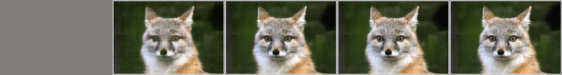
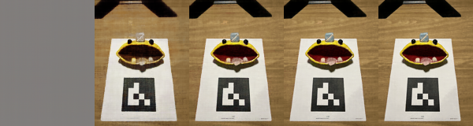
I swept two widths (64, 256) against two PE depths (L=1, L=10) for 600 iterations per run. Low width and low frequency underfits noticeably (around 21 dB). Increasing just the width improves PSNR a bit, while increasing only the positional encoding depth gives a larger boost to around 30 dB. The best combination uses both a wider MLP and deeper encoding, which pushes PSNR to about 35 dB even with the shorter training schedule.
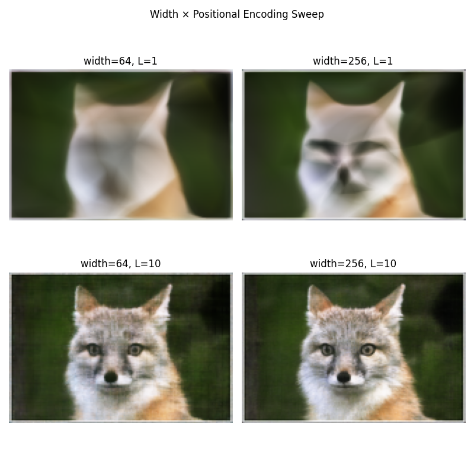
Tracking PSNR during training helps diagnose when the network stops making substantial progress. For the fox image, the curve rises steeply in the first few hundred steps as the model captures coarse structure, then flattens near 36–37 dB. This matches what the reconstructions look like and suggests that running much longer would not change them in a noticeable way.
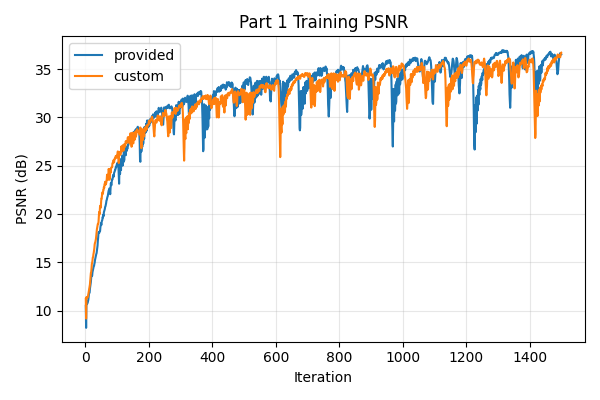
Extend the setup to multiview data: build the ray geometry, NeRF architecture, and volume renderer for both the Lego scene and my own object.
I implemented three reusable helpers in main.py to match the transformations in the handout. transform_points treats any 4×4 matrix as a camera-to-world transform, applies it to batched 3D points in homogeneous coordinates, and returns xyz positions. pixel_to_camera inverts the pinhole projection for a given intrinsic matrix and depth, staying in PyTorch so gradients can flow through it. pixel_to_ray lifts pixel centers (with a +0.5 offset), uses a unit depth, maps them to world space, and normalizes the resulting directions.
The module runs a small sanity harness that checks a round trip through transform_points and its inverse, validates the pixel lifting algebra on a toy camera, and confirms that all ray directions have unit length. To understand the Lego dataset, I also plotted the camera centers for the train, val, and test splits, which serves as a reference for the later sampling and rendering steps.
Separately, I used a short test script to reproject random points using pixel_to_camera and pixel_to_ray and verify that they invert each other numerically. Once those checks passed, I was comfortable wiring these functions into the ray sampler and dataloader used in the remaining parts.
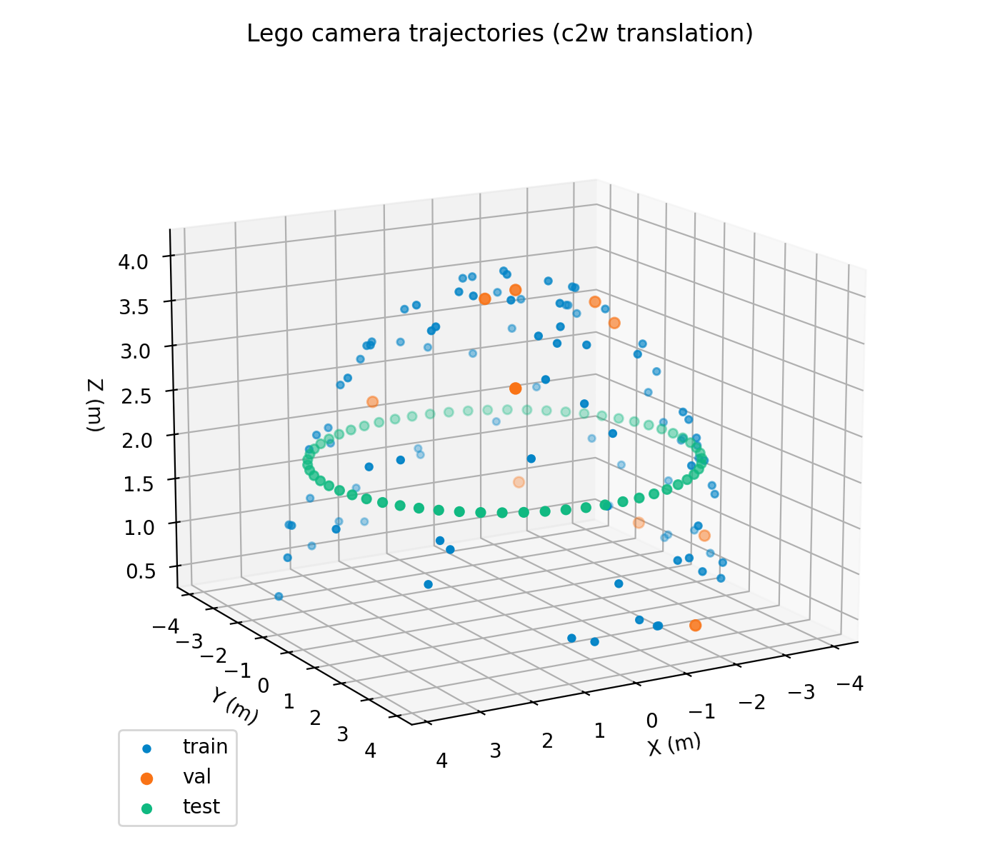
lego_200x200.npz: training views wrap around the object, while validation and test cameras form a sparser ring that is later used for evaluation and the orbit video.The Part 2.2 work is built around a RayBatch dataclass and a sample_rays_from_images helper. Given images_train, intrinsics, and c2ws, the function supports two sampling strategies: a global mode that flattens all pixels from all cameras and draws uniformly, and a per-image mode that chooses a subset of cameras and draws an equal share of rays from each. Every sampled pixel is shifted to its center before conversion to rays, and the function returns aligned tensors for ray origins, directions, RGB values, UV coordinates, and camera indices.
The companion sample_along_rays function discretizes each origin/direction pair into a fixed number of samples between near=2.0 and far=6.0 for the Lego scene. It computes bin edges, optionally adds stratified noise inside each bin when perturb=True, and exposes both the sample depths and the corresponding deltas, which feed directly into the volume renderer. Near and far can be scalars or per-ray tensors; broadcasting logic makes both cases work.
The visualization below comes from the actual Lego dataloader: a bundle of randomly sampled rays (drawn as lines), sample points along each ray (colored by depth), and a subset of camera centers. Because this uses the exact same functions as the training loop, it doubles as a debugging tool for both the geometry and the sampling range.
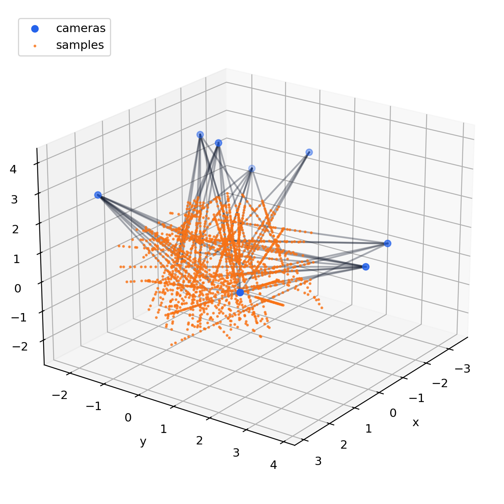
I wrapped the sampling utilities in a RaysData class that precomputes per-pixel rays for the training split (100 cameras × 200 × 200 pixels). On initialization it tiles the integer UV grid, flattens the RGB supervision into a pixels array, and runs pixel_to_ray once per camera to cache rays_o and rays_d. These arrays are exposed as NumPy buffers so the debugging snippet from the handout can compare images_train[0, uv[:,1], uv[:,0]] against dataset.pixels directly.
The sample_rays() method then just indexes into these cached tensors, which keeps sampling fast and deterministic. By default it performs global sampling and returns NumPy arrays, but when return_batch=True it returns a torch RayBatch so the NeRF trainer can work entirely in PyTorch. Optional arguments let me restrict sampling to a particular subset of cameras or enforce a per-image sampling pattern.
RaysData highlights - Precompute all ray origins/directions once with centered UVs - Keep flattened uvs/pixels/camera ids for equality tests with the images - sample_rays(..., return_batch=True) → torch RayBatch for training - sample_rays(..., camera_indices=[i]) → rays from a chosen camera - Built-in asserts catch UV ordering mistakes during development
The command-line interface mirrors the provided snippet: python main.py --task part2vis --part2-camera-indices 0 --part2-ray-count 80 loads lego_200x200.npz, samples rays from one training camera, and launches a viser window with depth-colored samples. Switching to --part2-dataset data/object_dataset.npz --part2-split val lets me run the same visualization on my own object dataset.
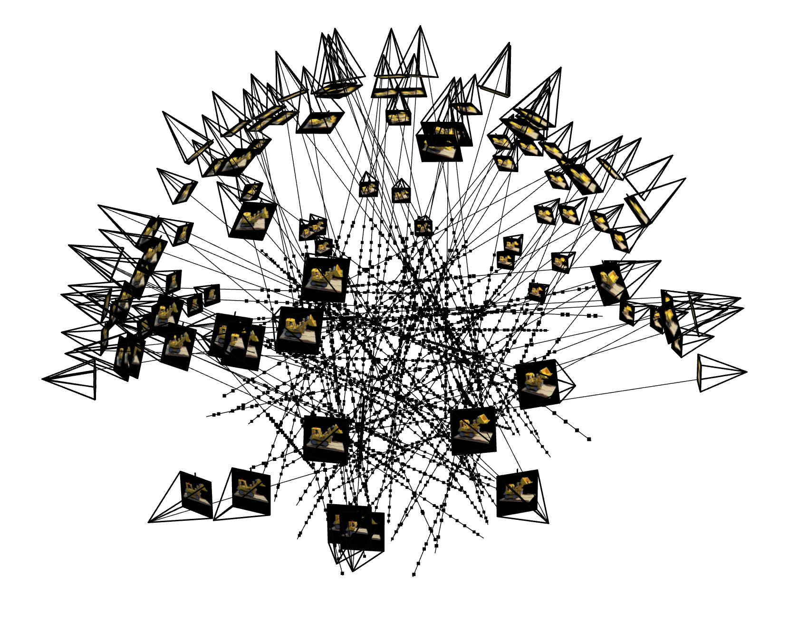
--task part2vis using the RaysData sampler.I followed the original NeRF architecture and implemented it as a NeRFModel class in main.py. Each 3D world coordinate is encoded with L=10 sinusoidal bands (63-D vector), while the corresponding unit ray direction uses a smaller L=4 encoding (27-D). This keeps most of the representational power in the position stream while still allowing view-dependent effects.
The network uses an eight-layer, 256-wide ReLU trunk with a skip connection that concatenates the encoded position back in after layer 4. One linear head predicts density, passed through ReLU to keep σ ≥ 0. The color head first processes the trunk features, concatenates them with the encoded direction, and runs them through a small bottleneck before producing RGB values with a Sigmoid output. All computations are done in PyTorch so gradients propagate into both the positional encodings and the sampling routines.
Model summary (Part 2.4) - Positional encoding: 3D coords → 63-D (L=10), dirs → 27-D (L=4), dirs are unit-normalized - Trunk: 8 × (Linear 256 → ReLU) with a skip connection at layer 4 - Density head: Linear 256 → ReLU (σ) - Color head: Linear 256 → ReLU → concat(dir PE) → Linear 128 → ReLU → Linear 3 → Sigmoid - Single implementation shared between the Lego dataset and the custom scene
The volume_render function follows the standard NeRF equations: it converts densities into alpha values using 1 - exp(-σ · Δ), accumulates front-to-back transmittance, and blends RGB samples with those weights. It also returns per-sample weights, alpha values, accumulated opacity, and the remaining transmittance for optional background compositing. Two helpers wrap this core routine: _render_training_batch processes mini-batches of rays during optimization, and _render_rays_in_chunks renders entire images for validation or novel views without exhausting memory.
The --task part2train mode combines all these pieces. Each iteration draws 10k rays from the RaysData sampler, jitters 32 depth samples between near=2 and far=6, runs them through NeRFModel, and minimizes pixel MSE with Adam (lr=5e-4). Every 100 iterations the trainer renders three validation cameras at 200×200 resolution, logs PSNR, and saves side-by-side prediction vs ground truth images (for example, results/part2/train/val_cam00_iter_0600.png). After 1k steps it saves both the best checkpoint and a 360° GIF rendered from the provided test camera path.
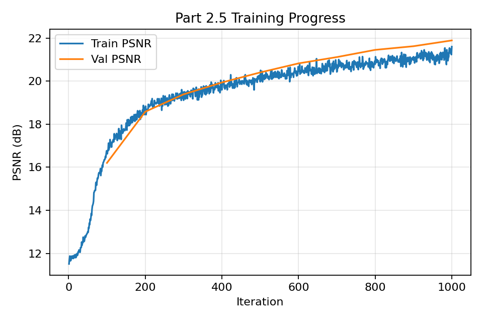
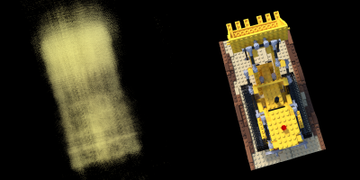
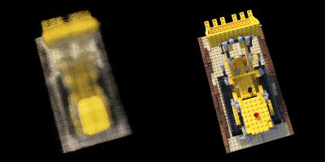
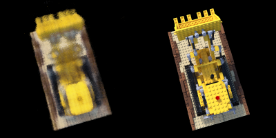
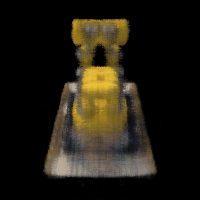
For the custom experiment I trained NeRF on a dataset called data/lafufu_dataset.npz. To keep memory usage under control I used 4,096 rays per step, 64 stratified depth samples, and tighter bounds (near=0.02, far=0.5) so the model only evaluates the region near the plush toy. With these settings, training runs steadily on the MPS backend without swapping.
The first version of my Part 2.6 code was wrong. The proper fix is forcing a synthetic orbit for custom datasets and solving a least-squares focus point from the actual training cameras, then using that as the look-at target. Only after applying that patch does the camera sweep stay glued to the plush instead of drifting toward the tag.
For this scene I switched to orbit rendering using --part2-test-mode orbit and set the orbit center so the virtual camera looks at the plush instead of the ArUco tag. A small radius scale factor and a few centimeters of vertical offset keep the path just above the table top while still staying close to the object. As in the Lego run, the trainer renders a few validation cameras every 100 iterations and records both loss and PSNR. By 600 iterations the model reaches about 17.7 dB PSNR and the reconstruction already preserves the main seams and embroidery on the plush.
Custom run (Part 2.6) python main.py --task part2train \ --part2-dataset data/lafufu_dataset.npz \ --part2-near 0.02 --part2-far 0.5 --part2-num-samples 64 \ --part2-train-batch 4096 --part2-train-iters 600 --part2-train-white-bg \ --part2-test-mode orbit --part2-orbit-num-frames 90 --part2-save-video \ --part2-orbit-radius-scale 1.1 --part2-orbit-height 0.05 \ --part2-train-output results/part2/custom
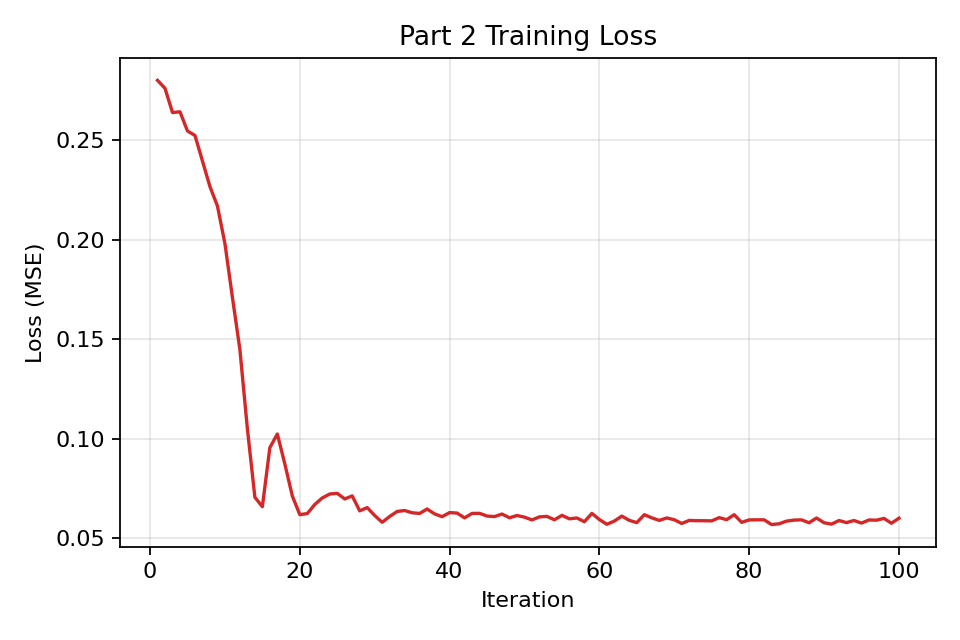
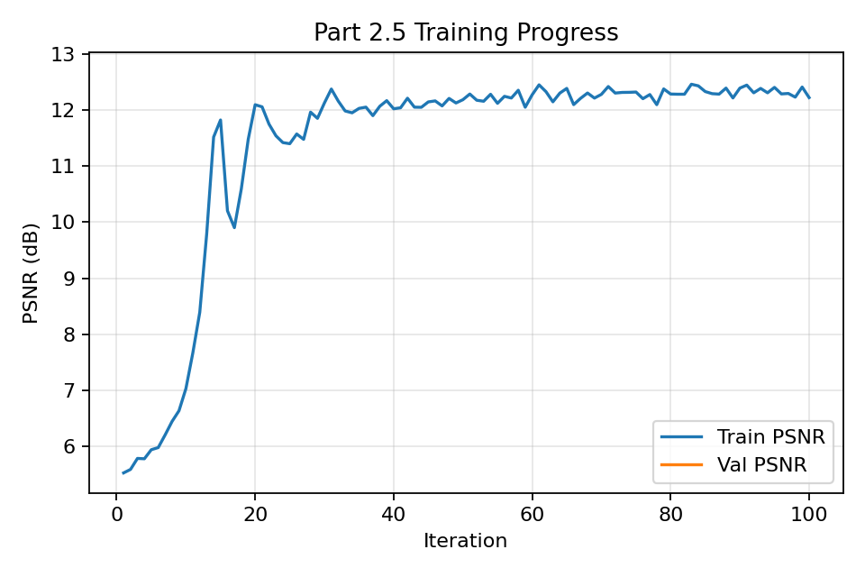
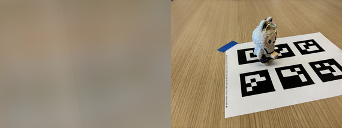
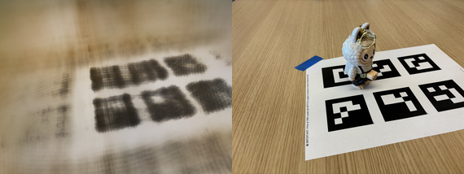
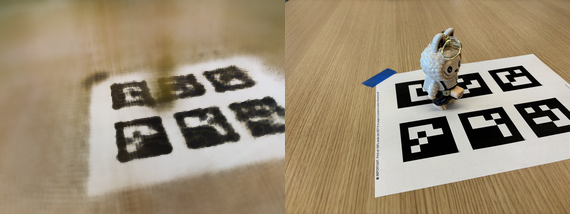
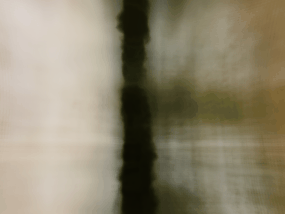